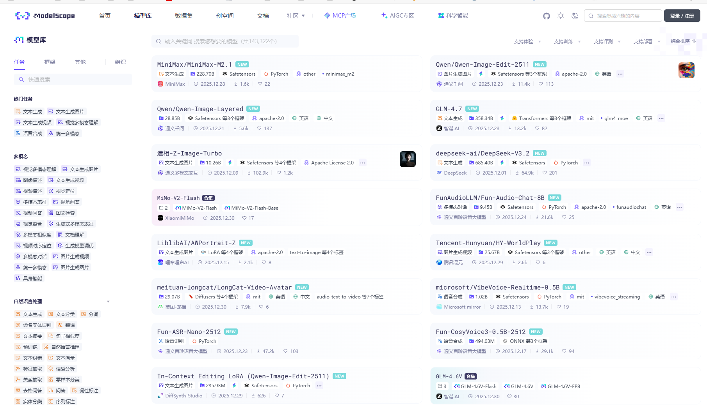

At first, we need to create conda environment using:
conda create -n data_process python=3.10.19 -y
conda activate data_process
We use Pytorch 2.8 here:
pip install torch==2.8.0 torchvision==0.23.0 torchaudio==2.8.0 --index-url https://download.pytorch.org/whl/cu129
If you are using Windows, you can skip this step. This package is about to run LLM background and accelerate them.
pip install vllm==0.11.0
Modelscope is Alibaba's model supplier, Huggingface's peer.
pip install modelscope==1.32.0
Use this link we go to modelscope's official website:
https://www.modelscope.cn/models
Use this link we go to modelscope's official website:
Modelscope's Site 